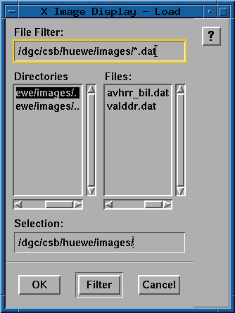

2.0 File Interfaces
2.1 Load LAS Images
The load LAS images function
allows the user to select a LAS image to be loaded into the currently defined
memory planes. A list of images in the current directory is displayed
by default (using the standard Motif file selector). The user has several
options at this point:
- The user may select one of the images listed below the label Files:
by clicking the left mouse button on the choice, and
then clicking the OK button, or by simply double
clicking the left mouse button on the choice.
- The user may select an image from another directory
by typing the directory specification into the box below
the label File Filter: and pressing enter (or clicking
on the Filter button). This displays a list of files
from the directory specified. Directory navigation can also be done
by clicking the left mouse button on a directory name in the the list
below the Directories: label and then clicking on the Filter
button (or by just double clicking on the directory name).
- The user may also select an image (by clicking the left
mouse button on the choice) and then enter a window and/or
band specification. The image name selected appears in
the text box below the label Selection:. The window
and/or band specification may then be entered by clicking
the left mouse button in the text box and entering the
specification using standard LAS syntax
(i.e., image_name(sl,ss,nl,ns:b1,b2,b3)). Finally, the
user may type a LAS image name directly in the text box
below the label Selection:.

Each band of the selected image is loaded into a separate
memory plane and is subsampled, if necessary, to fit into the
defined size of the memory plane. The layout
function may be
used to redefine the memory plane configuration and/or the viewport
configuration. A scale and
offset are also calculated and applied to the image data if the
input data is not BYTE data.
XID has been designed to work with both 24-bit and 8-bit
color displays. In order to display a 3-band color image
on an 8-bit color display (PseudoColor visual), the 24 bits
of image data must be compressed to 8 bits. The color
compression algorithm used is a median cut color compression
algorithm taken from code developed for NASA JPL by the
California Institute of Technology in 1989. This algorithm
produces an image with the specified number of colors along
with a color map used to display the image. XID actually
reduces the image to 200 colors (rather than 256) in order to
reserve 56 colors for other operations. Single band black and
white images are also reduced to 200 gray level values.
Display of images on 24-bit displays (DirectColor visual)
requires less compression of the image data but still
requires some compresssion in order to reserve a number of
colors for other operations. Each band of a color image is
essentially reduced to 7 bits resulting in a 21-bit (rather
than 24-bit) image. As described for pseudocolor displays,
a single band black and white image is reduced to 200 gray
level values for output to a 24-bit display.
- OK:
- Accept the currently selected image and proceed with loading the image.
- Filter:
- Apply the currently selected filter.
- Cancel:
- Close the Load panel without loading an image.
2.2 Load nonLAS Images
The load nonLAS images function
allows the user to select any flat file containing image data to be loaded
into the currently defined
memory planes. A list of files with the extension .img in the current
directory are displayed
by default (using the standard Motif file selector). The user has several
options at this point:
- The user may select one of the images listed below the label Files:
by clicking the left mouse button on the choice, and
then clicking the OK button, or by simply double
clicking the left mouse button on the choice.
- The user may select an image from another directory
by typing the directory specification into the box below
the label File Filter: and pressing enter (or clicking
on the Filter button). This displays a list of files
from the directory specified. Directory navigation can also be done
by clicking the left mouse button on a directory name in the the list
below the Directories: label and then clicking on the Filter
button (or by just double clicking on the directory name).
- The user may also select an image (by clicking the left
mouse button on the choice) and then enter a window and/or
band specification. The image name selected appears in
the text box below the label Selection:. The window
and/or band specification may then be entered by clicking
the left mouse button in the text box and entering the
specification using standard LAS syntax
(i.e., image_name(sl,ss,nl,ns:b1,b2,b3)). Finally, the
user may type an image name directly in the text box
below the label Selection:.

For nonLAS images, the user is required to enter information describing the
input image such as number of lines, number of samples, etc. (see below).
After the appropriate information has been entered, each band of the selected
image is loaded into a separate
memory plane and is subsampled, if necessary, to fit into the
defined size of the memory plane. The layout
function may be
used to redefine the memory plane configuration and/or the viewport
configuration. A scale and
offset are also calculated and applied to the image data if the
input data is not BYTE data.
XID has been designed to work with both 24-bit and 8-bit
color displays. In order to display a 3-band color image
on an 8-bit color display (PseudoColor visual), the 24 bits
of image data must be compressed to 8 bits. The color
compression algorithm used is a median cut color compression
algorithm taken from code developed for NASA JPL by the
California Institute of Technology in 1989. This algorithm
produces an image with the specified number of colors along
with a color map used to display the image. XID actually
reduces the image to 200 colors (rather than 256) in order to
reserve 56 colors for other operations. Single band black and
white images are also reduced to 200 gray level values.
Display of images on 24-bit displays (DirectColor visual)
requires less compression of the image data but still
requires some compresssion in order to reserve a number of
colors for other operations. Each band of a color image is
essentially reduced to 7 bits resulting in a 21-bit (rather
than 24-bit) image. As described for pseudocolor displays,
a single band black and white image is reduced to 200 gray
level values for output to a 24-bit display.
- OK:
- Accept the currently selected image and
pop up the Image File Information panel to obtain the information
required to proceed with loading the image.
- Filter:
- Apply the currently selected filter.
- Cancel:
- Close the Load panel without loading an image.

- # Header Bytes:
- Enter the number of bytes to skip
before image data is found. Pressing enter in this field
automatically advances the cursor to the # Bands text field.
- # Bands:
- Enter the number of bands contained
in the selected image. Pressing enter in this field automatically
advances the cursor to the # Lines text field.
- # Lines:
- Enter the number of lines contained
in each band of the selected image. Pressing enter in this
field automatically
advances the cursor to the # Samples text field.
- # Samples:
- Enter the number of samples contained
in each line of the selected image. Pressing enter in this
field automatically
advances the cursor to the Apply button.
The Byte, Integer*2, Integer*4, and Real*4 radio
buttons allow the user to select the data type of the selected image.
- Byte:
- The selected image contains pixel values of 8-bit unsigned integer
(0 through 255).
- Integer*2:
- The selected image contains pixel values of 16-bit signed integer
(-32768 through 32767).
- Integer*4:
- The selected image contains pixel values of 32-bit signed integer
(-2147483648 through 2147483647).
- Real*4:
- The selected image contains pixel values of 32-bit signed real
(system dependent).
The BSQ and BIL radio buttons
allow the user to select the band format of the selected image.
- BSQ:
- Band sequential format.
- BIL:
- Band interleaved by line format.
- Cancel:
- Close the Image File Information panel without loading the
selected image. The File Selection panel remains intact.
- Apply:
- Close both the Image File Information panel and the
File Selection panel and proceed with loading
the image. Note: If the Apply button is the
currently active button (eg., this button becomes active when the user presses
enter
at the # Samples text field), the user may simply press
enter to proceed with loading the image.